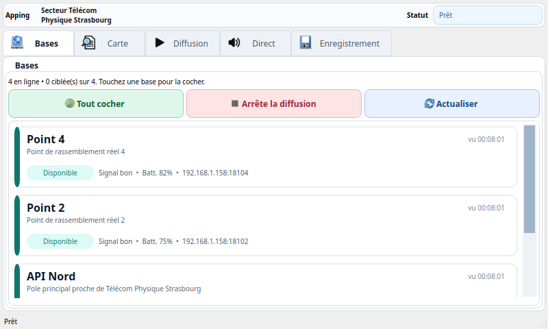
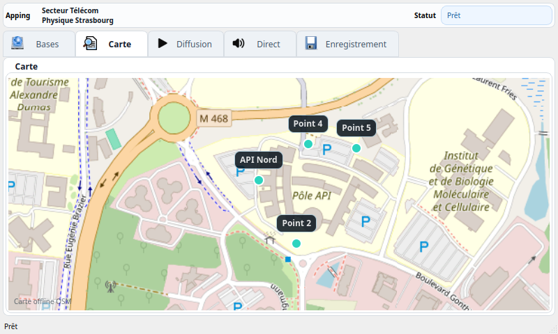
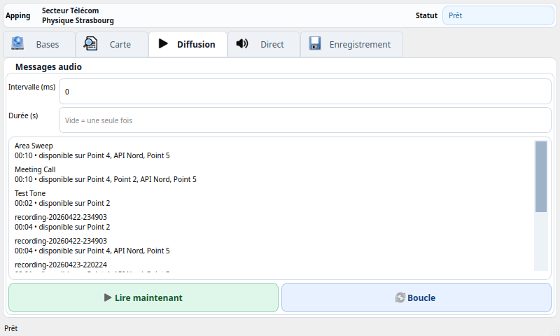
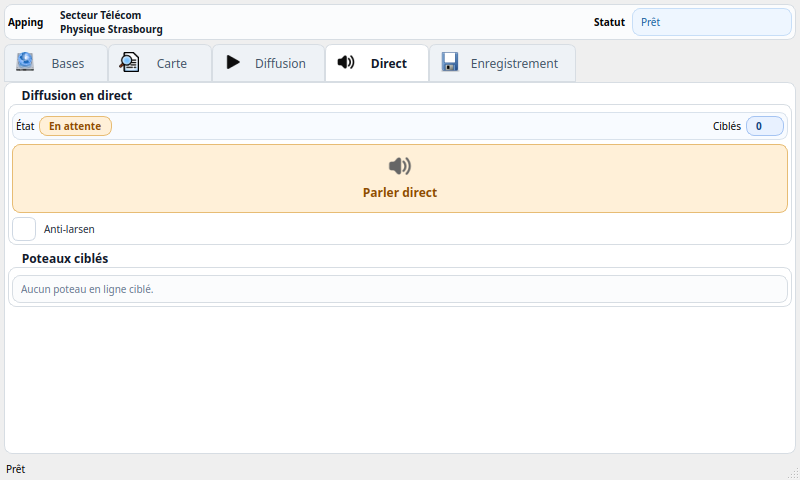
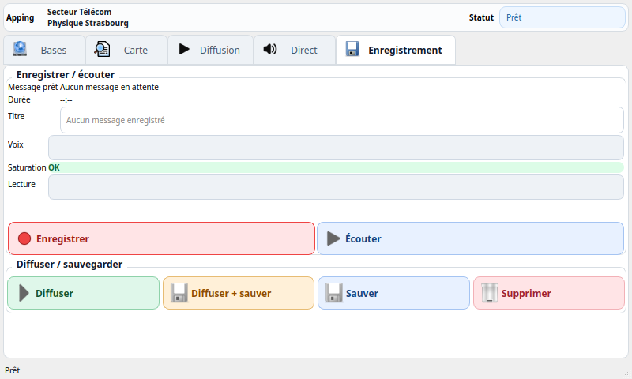
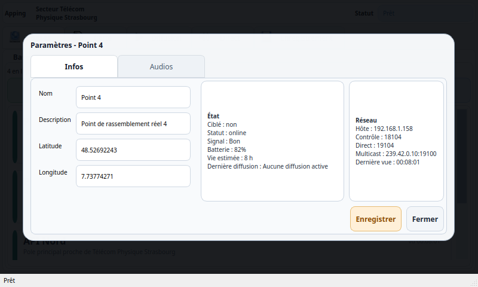

Dans le projet, j’ai fait une application de commande qui tourne sur le module portable sous Linux. En gros ce module sert à piloter les poteaux de sonorisation qui sont installés sur les points de rassemblement. Il n’y a pas de serveur central : les bases fixes sont juste sur le même réseau, et le module portable discute directement avec elles.
L’interface est faite en C++ avec Qt. Elle est prévue pour un petit écran horizontal, environ 800 x 480, donc les menus sont séparés pour ne pas tout mettre au même endroit. Le but c’est que l’utilisateur puisse voir rapidement quelles bases sont disponibles, choisir les poteaux ciblés, lancer un message préenregistré ou utiliser le mode micro.
Voir annexes : les captures des menus principaux sont mises à la fin de cette partie pour montrer concrètement comment l’application est organisée.
Le fonctionnement est découpé en plusieurs menus. Le menu Bases sert à voir les poteaux disponibles et à choisir ceux qui vont diffuser. Le menu Carte affiche les points autour de Télécom Physique Strasbourg et du pôle API. Le menu Diffusion permet de lancer un message déjà présent dans la bibliothèque audio. Le menu Direct sert au mode mégaphone en temps réel. Enfin le menu Enregistrement permet d’enregistrer un message, de le réécouter, puis de le diffuser ou de le sauvegarder.
Pour éviter les erreurs, dès qu’une action peut faire diffuser du son sur les poteaux, l’application demande une validation avec la liste des poteaux concernés. Comme ça on voit bien quelles bases vont parler avant d’envoyer le son.
Pour les commandes qui ne sont pas de l’audio, l’application envoie des requêtes de contrôle aux bases fixes. Par exemple pour savoir l’état d’une base, lancer un message préenregistré, arrêter une diffusion, supprimer un audio ou synchroniser la bibliothèque. Ces échanges sont légers et passent sur le réseau local.
Pour le son en direct, le fonctionnement est différent. Le flux audio utilise Roc Toolkit avec Opus pour économiser le débit. Le son est envoyé en multicast dans la plage 239.0.0.0/8, ici avec l’adresse 239.42.0.10, parce que c’est plus adapté au réseau mesh HaLow avec batman-adv. Comme ça le réseau peut transporter le flux une seule fois au lieu de faire une copie séparée pour chaque poteau.
Le projet est séparé en deux programmes C++ :
Il y a aussi une partie commune dans le code pour les modèles de données et les structures partagées. Les fichiers de configuration permettent de définir l’identifiant, le nom, la position GPS, les ports réseau et les dossiers audio de chaque base. Pour les tests, le projet contient une simulation locale avec plusieurs bases autour de Télécom Physique Strasbourg.
Ce menu sert à choisir les poteaux ciblés. Un appui court sur une base permet de la sélectionner ou de la désélectionner. Un appui long ouvre le menu de paramètres de cette base. On voit aussi rapidement l’état, le signal, la batterie simulée et si la base est disponible.

La carte affiche les points de rassemblement autour du secteur. Elle est prévue pour marcher hors ligne avec des tuiles préparées à l’avance. Les points permettent de voir la position des poteaux et leur état de manière plus visuelle.

Ce menu permet de choisir un message préenregistré et de le lancer sur les bases sélectionnées. On peut aussi régler un intervalle ou une durée si le message doit être répété. Avant l’envoi, une confirmation indique les poteaux qui vont diffuser.

Le menu Direct correspond au mode mégaphone. Quand on lance ce mode, la voix du micro est encodée en Opus puis envoyée en multicast vers les bases sélectionnées. Il y a aussi une option anti-larsen pour limiter le retour audio quand le micro et les haut-parleurs sont proches.

Ce menu sert à préparer un nouveau message. On peut enregistrer, voir le niveau de voix, vérifier la saturation, écouter le résultat, puis soit le diffuser directement, soit le sauvegarder dans les préenregistrements. Ce fonctionnement évite d’envoyer un message raté sur les poteaux sans l’avoir validé avant.

Depuis la liste des bases, un appui long ouvre le menu de paramètres. Ce menu permet de modifier les informations du poteau comme le nom ou la position, mais aussi de gérer les audios présents sur la base. On peut synchroniser les audios manquants ou supprimer un fichier audio d’un poteau.

Au final l’application sert de console portable pour commander tout le système. Elle permet de gérer les bases sans serveur central, de lancer des messages déjà stockés sur les poteaux, d’utiliser le micro en direct et de préparer de nouveaux messages. La séparation entre l’application portable et le service des bases fixes rend le système plus simple à tester et plus proche du fonctionnement réel sur le réseau HaLow.